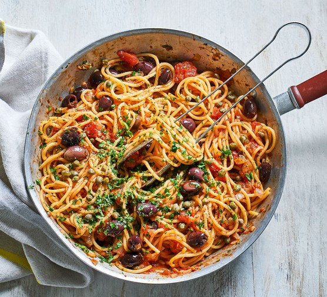

Pasta

This is a tasty tomota and olive pasta dish. This is a great meal if you are looking for a light but delicious meal for the summer. The best part is it only takes 15 minutes to make!
Ingredients
- Pasta
- Tomato Sauce
- Olives (piped)
- Olive Oil
- Garlic
- Salt & Pepper
- Chilly
- Cherry Tomatoes
Steps
- Put the pasta in boiling water. Start a 15 minute timer
- Chop the garlic thinly
- Heat up a pan with oil and add the chopped garlic
- After a few minutes, the garlic should be nice and golden, now add the tomatoes and olives
- Once 10 minutes have gone by add the tomato sauce to the pan and stir it in
- Add the pasta to the pan and sprinkle some salt & pepper
- You are now ready to serve!